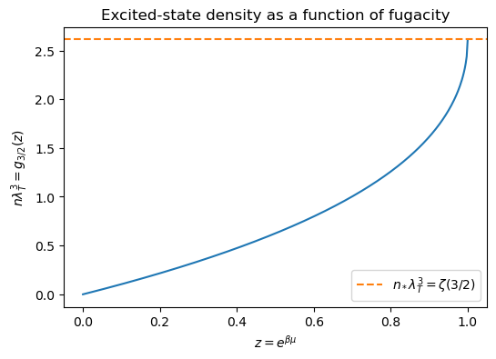
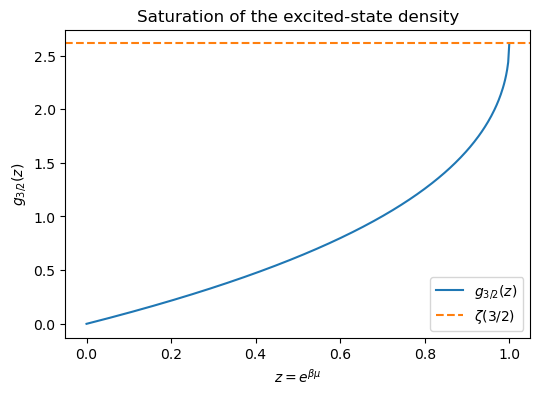
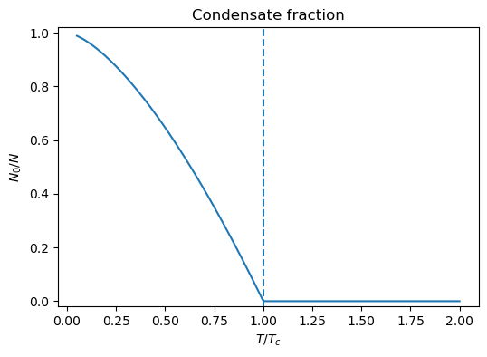
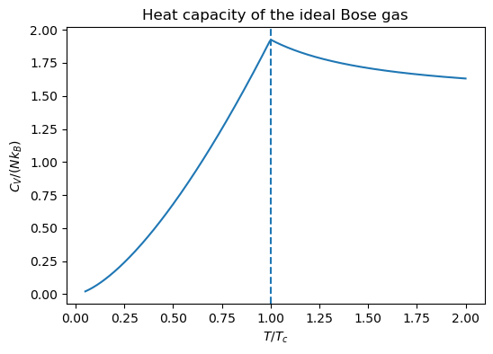
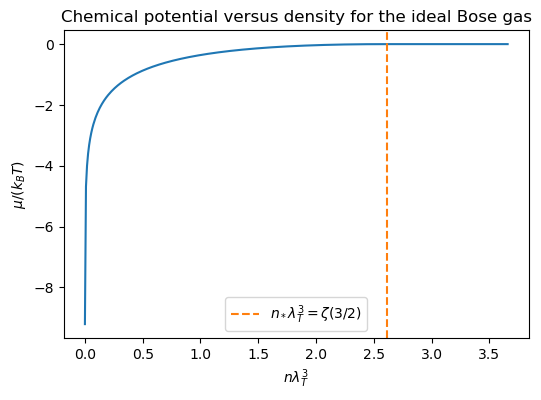

Bose–Einstein Condensation of an Ideal Bose Gas#
These notes derive Bose–Einstein condensation (BEC) for a homogeneous non-interacting Bose gas in three spatial dimensions. The central idea is simple: at fixed temperature, the thermally excited states can accommodate only a finite particle density. Once those excited states are saturated, any additional particles must enter the single-particle ground state, producing a macroscopic occupation of that state.
1. Bose occupation numbers#
For non-interacting bosons in the grand canonical ensemble, the average occupation of a single-particle state with energy \(\epsilon_k\) is
The total particle number is
For bosons, the occupation number diverges if the denominator tends to zero and would become unphysical if it became negative. Therefore one must have
where \(\epsilon_0=\min_k \epsilon_k\) is the ground-state energy. We choose the zero of energy so that
2. Zero-temperature limit#
At \(T=0\), all bosons occupy the lowest single-particle state:
This is the simplest example of a Bose condensate: a macroscopic number of particles occupy one quantum state.
The central question is whether this remains true at finite temperature.
3. Separate the condensate from the excited states#
Write
where
A Bose–Einstein condensate exists if, in the thermodynamic limit,
is finite and nonzero. Since we take \(N/V\) fixed, this is equivalent to saying that the occupation of the ground state is macroscopic:
4. Free particles in three dimensions#
For a gas of free particles in a cubic box, the single-particle energies are
In the thermodynamic limit, the sum over states becomes an integral:
Thus the density of particles in excited states is
Using spherical symmetry,
5. Fugacity and Bose functions#
Define the fugacity
Since \(\mu\leq 0\), we have
Also define the thermal de Broglie wavelength
To make contact with the standard Bose integral, introduce the dimensionless variable
Then
so the excited-state density becomes
Using \(\Gamma(3/2)=\sqrt{\pi}/2\), this can be written as
where
Supplementary calculation: why the integral equals the sum
For \(0<z\le 1\), write
which is just the geometric series with ratio \(ze^{-x}\). Substituting into the integral gives
Now scale the integration variable as \(u=\ell x\), so \(dx=du/\ell\). Then
Therefore
The function \(g_s(z)\) is also called a Bose function or polylogarithm:
Show code cell source
import numpy as np
import matplotlib.pyplot as plt
from scipy.special import zeta
from mpmath import polylog
zvals = np.linspace(1e-6, 1 - 1e-6, 400)
nlam3 = np.array([float(polylog(1.5, z)) for z in zvals])
nstar = float(zeta(1.5))
plt.figure(figsize=(6,4))
plt.plot(zvals, nlam3)
plt.axhline(nstar, linestyle='--', color='C1', label=r'$n_*\lambda_T^3=\zeta(3/2)$')
plt.xlabel(r'$z=e^{\beta\mu}$')
plt.ylabel(r'$n\lambda_T^3 = g_{3/2}(z)$')
plt.title(r'Excited-state density as a function of fugacity')
plt.legend()
plt.show()

This plot makes the saturation mechanism visible: for the ideal gas, \(n\lambda_T^3=g_{3/2}(z)\) increases with \(z\) but never exceeds the finite value \(\zeta(3/2)\). Once this maximum excited-state density is reached, any additional particles must go into the condensate.
6. Why condensation occurs in three dimensions#
The maximum possible density of thermally excited particles occurs when \(\mu\to 0^-\), or equivalently \(z\to 1\):
The value
is finite.
This finiteness is the crucial fact. At fixed \(T\) and \(V\), the excited states can hold only a finite number of particles:
If the total particle number exceeds this value, the excess particles cannot be accommodated in excited states and must occupy the ground state:
Infrared behavior#
The finiteness of \(g_{3/2}(1)\) follows from the small-\(x\) behavior of the integral
For small \(x\),
so the integrand behaves like
This is integrable at \(x=0\). At large \(x\), the integrand decays exponentially. Therefore \(g_{3/2}(1)\) is finite.
Note
Why 3D is special for the homogeneous ideal gas
The same infrared argument shows why a free Bose gas condenses at finite temperature in three dimensions, but not in one or two dimensions. In \(d\) spatial dimensions, at \(\mu=0\) and small \(k\),
so the excited-state density behaves in the infrared like
This integral converges at small \(k\) only for \(d>2\). Thus a homogeneous ideal Bose gas has a finite-temperature BEC transition in 3D, whereas in 1D and 2D the excited states can absorb arbitrarily many particles as \(\mu\to 0^-\), so there is no finite-\(T\) condensation in the thermodynamic limit.
7. Critical temperature#
Let the total density be
The critical temperature is defined by the condition that the excited states are just saturated:
Using
we obtain
Numerically,
8. Condensate fraction below \(T_c\)#
For \(T<T_c\), the excited states are saturated, so the chemical potential is pinned at
The number of particles in excited states is then
Since \(\lambda_T^{-3}\propto T^{3/2}\), we have
Therefore
Above \(T_c\), there is no macroscopic condensate in the thermodynamic limit:
9. Physical meaning of the grand-canonical singularity#
For an ideal Bose gas with ground-state energy set to zero, the grand-canonical expression becomes singular if one tries to take
But physically, there is no problem with putting many bosons into the box. The point is that once the excited states are saturated, increasing \(N\) no longer changes \(\mu\). Instead,
and all additional particles go into the ground state.
More precisely, for densities above the critical value
the grand-canonical description of the ideal condensate becomes singular, and it is conceptually cleaner to switch to the canonical ensemble with fixed total particle number. In that language, the excited states remain saturated at \(N_{\rm ex}=Vn_*\) while the excess particles accumulate in the \(k=0\) mode.
The restriction \(\mu\le 0\) here is special to the non-interacting gas with the single-particle ground-state energy chosen as zero. Interacting Bose systems are usually formulated for arbitrary chemical potential, and their equation of state need not show this ideal-gas singularity.
For \(T<T_c\), the correct canonical picture is
Adding or removing particles from the \(k=0\) state costs no energy because \(\epsilon_0=0\). It also contributes no entropy in the ideal-gas approximation, because all condensate particles occupy the same single-particle quantum state.
Thus, below \(T_c\), the condensate acts as a particle reservoir for the excited states.
Note
A standard subtlety is that the grand-canonical ensemble gives anomalously large fluctuations of the condensate occupation for the ideal Bose gas. For thermodynamic quantities such as \(P\), \(U\), and \(C_V\), however, the grand-canonical treatment still gives the correct equation of state in the thermodynamic limit.
10. Pressure below the transition#
The grand potential of the ideal Bose gas is
Since
the pressure is
In the thermodynamic limit, this becomes
The derivation is a straightforward but somewhat algebraic manipulation, so it is separated out here:
Supplementary calculation: why the pressure involves \(g_{5/2}(z)\)
Replace the sum by an integral,
so
Using spherical symmetry and \(\epsilon_k=\hbar^2k^2/(2m)\),
Now expand the logarithm,
to obtain
The Gaussian integral is
so with \(a=\ell\beta\hbar^2/(2m)\) we get
Using the definition
and the thermal wavelength \(\lambda_T=\sqrt{2\pi\hbar^2/(mk_BT)}\), this becomes
Below \(T_c\), \(z=1\), so
Since \(\lambda_T^{-3}\propto T^{3/2}\),
A striking consequence is that, below \(T_c\), the pressure depends only on temperature, not on the total particle density. The condensate particles are in the zero-momentum state and do not contribute to the pressure of the ideal gas.
This density-independence is special to the non-interacting gas. In a weakly interacting Bose fluid, the condensate does contribute to the mechanical equation of state.
11. Internal energy and heat capacity#
For a free ideal Bose gas, the internal energy of the excited particles is
Below \(T_c\), \(z=1\), so
Using the definition of \(T_c\), this can be written as
Therefore, for \(T<T_c\),
At the transition, the heat capacity is continuous for the ideal Bose gas, but its slope is non-analytic. This cusp is the thermodynamic signature of the phase transition.
Numerically,
For \(T>T_c\), the fugacity \(z\) is determined implicitly by
The heat capacity per particle can then be written as
As \(T\to T_c^+\), \(z\to 1^-\) and \(g_{1/2}(z)\) diverges, so the second term vanishes. The value of \(C_V\) matches the expression from below, while the derivative changes non-analytically.
12. Optional numerical plots#
The following code illustrates four useful facts for the ideal three-dimensional Bose gas in units where \(T_c=1\) and \(N k_B=1\):
\(g_{3/2}(z)\) saturates at the finite value \(\zeta(3/2)\) as \(z\to 1^-\).
The condensate fraction grows continuously below \(T_c\).
The heat capacity has a cusp at the transition.
The chemical potential develops a kink as a function of density at fixed temperature.
Show code cell source
import numpy as np
import matplotlib.pyplot as plt
from scipy.special import zeta
from scipy.optimize import brentq
from mpmath import polylog
Tc = 1.0
zeta32 = float(zeta(1.5))
zeta52 = float(zeta(2.5))
T = np.linspace(0.05, 2.0, 300)
zvals = np.linspace(1e-6, 1 - 1e-6, 400)
g32_curve = np.array([float(polylog(1.5, z)) for z in zvals])
condensate_fraction = np.where(T < Tc, 1 - T**1.5, 0.0)
Cv = np.empty_like(T)
for i, t in enumerate(T):
if t <= Tc:
Cv[i] = (15/4) * (zeta52/zeta32) * t**1.5
else:
# Solve g_{3/2}(z) = zeta(3/2) / t^{3/2}
target = zeta32 / t**1.5
f = lambda z: float(polylog(1.5, z)) - target
z = brentq(f, 1e-12, 1 - 1e-12)
g12 = float(polylog(0.5, z))
g32 = float(polylog(1.5, z))
g52 = float(polylog(2.5, z))
Cv[i] = (15/4)*(g52/g32) - (9/4)*(g32/g12)
Show code cell source
plt.figure(figsize=(6,4))
plt.plot(zvals, g32_curve, label=r'$g_{3/2}(z)$')
plt.axhline(zeta32, linestyle='--', color='C1', label=r'$\zeta(3/2)$')
plt.xlabel(r'$z=e^{\beta\mu}$')
plt.ylabel(r'$g_{3/2}(z)$')
plt.title('Saturation of the excited-state density')
plt.legend()
plt.show()

Show code cell source
plt.figure(figsize=(6,4))
plt.plot(T, condensate_fraction)
plt.axvline(Tc, linestyle='--')
plt.xlabel(r'$T/T_c$')
plt.ylabel(r'$N_0/N$')
plt.title('Condensate fraction')
plt.ylim(-0.02, 1.02)
plt.show()

Show code cell source
plt.figure(figsize=(6,4))
plt.plot(T, Cv)
plt.axvline(Tc, linestyle='--')
plt.xlabel(r'$T/T_c$')
plt.ylabel(r'$C_V/(Nk_B)$')
plt.title('Heat capacity of the ideal Bose gas')
plt.show()

Show code cell source
nlam3_vals = np.linspace(1e-4, 1.4*zeta32, 400)
mu_over_kT = np.empty_like(nlam3_vals)
for i, nlam3 in enumerate(nlam3_vals):
if nlam3 < zeta32:
f = lambda z: float(polylog(1.5, z)) - nlam3
z = brentq(f, 1e-12, 1 - 1e-12)
mu_over_kT[i] = np.log(z)
else:
mu_over_kT[i] = 0.0
plt.figure(figsize=(6,4))
plt.plot(nlam3_vals, mu_over_kT)
plt.axvline(zeta32, linestyle='--', color='C1', label=r'$n_*\lambda_T^3=\zeta(3/2)$')
plt.xlabel(r'$n\lambda_T^3$')
plt.ylabel(r'$\mu/(k_B T)$')
plt.title(r'Chemical potential versus density for the ideal Bose gas')
plt.legend()
plt.show()

At fixed temperature, the slope changes abruptly at the critical density \(n_*=\lambda_T^{-3}\zeta(3/2)\). This kink indicates non-analytic behavior in the thermodynamic description, which is the hallmark of a phase transition. For the ideal Bose gas, the transition is continuous and is commonly classified as second order.
Summary#
For an ideal Bose gas in three dimensions:
Since \(g_{3/2}(1)=\zeta(3/2)\) is finite, the excited states can hold only a finite density of particles at fixed temperature. The critical temperature is
Below \(T_c\),
The pressure below \(T_c\) is
so the condensate itself does not contribute to the pressure in the ideal-gas approximation. The heat capacity has a non-analyticity at \(T_c\), marking a phase transition.